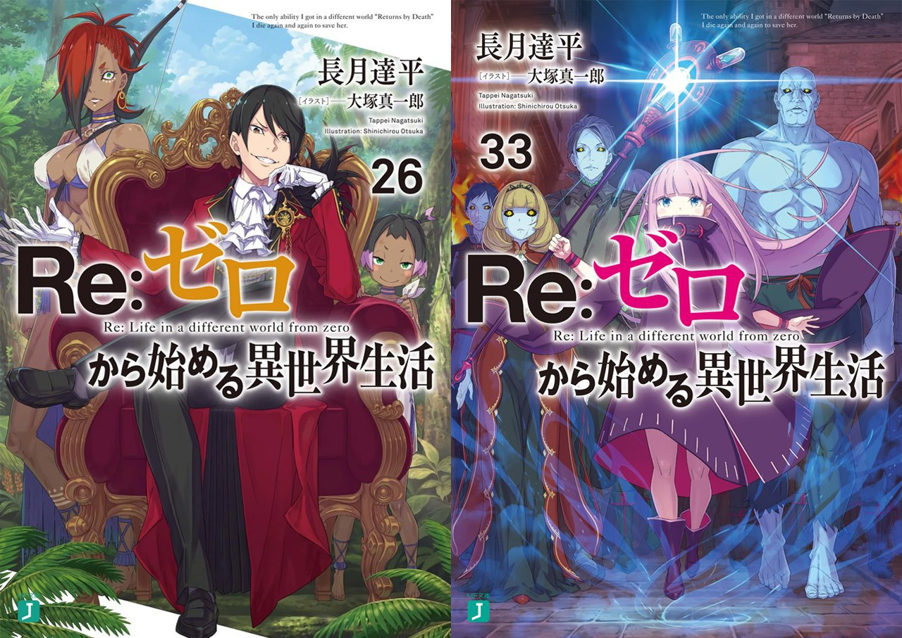
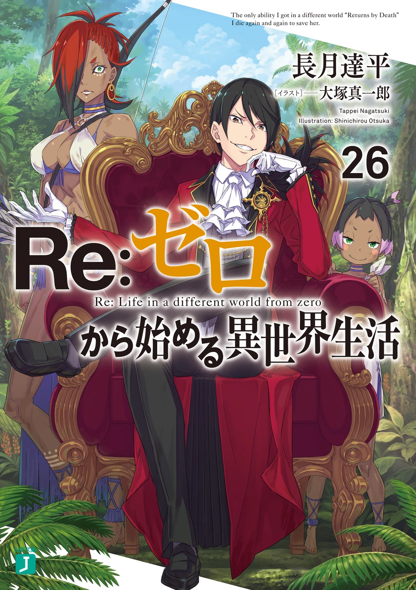
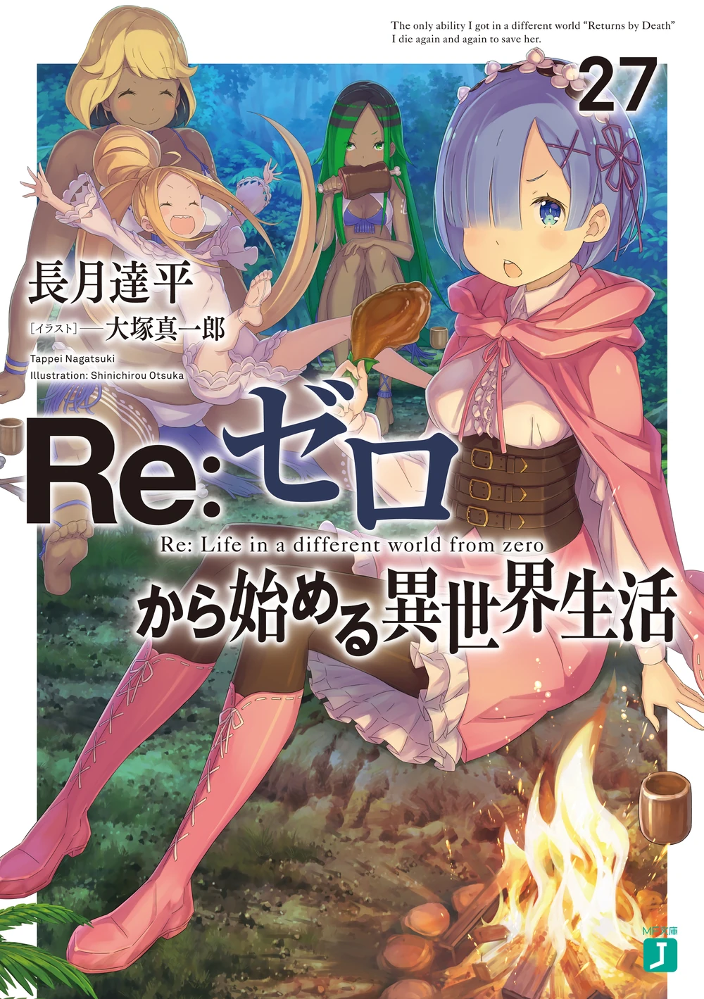
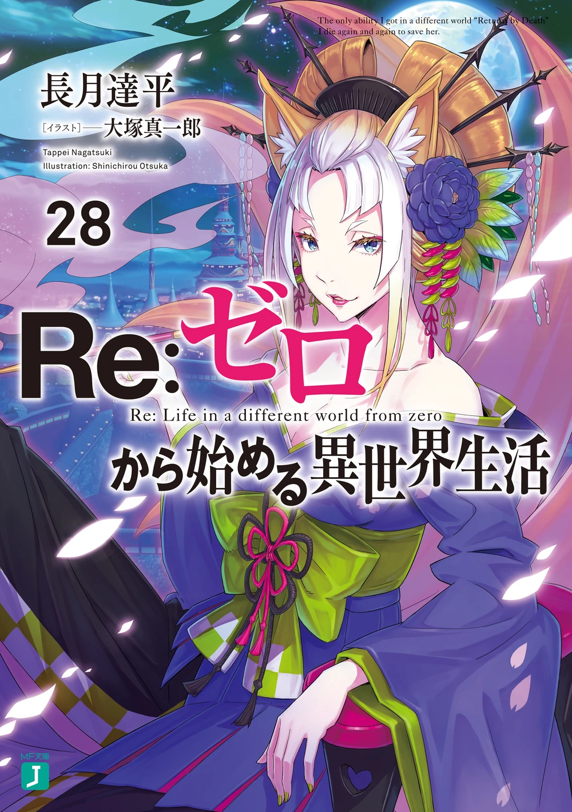
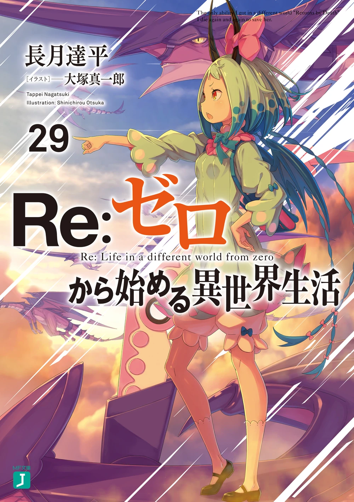
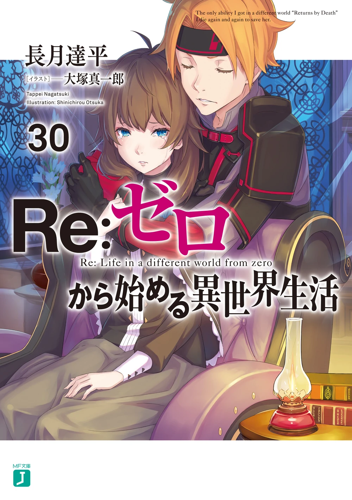
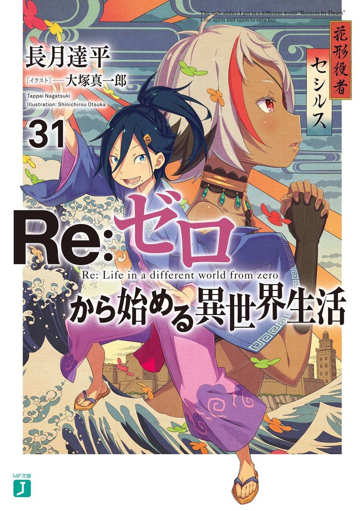
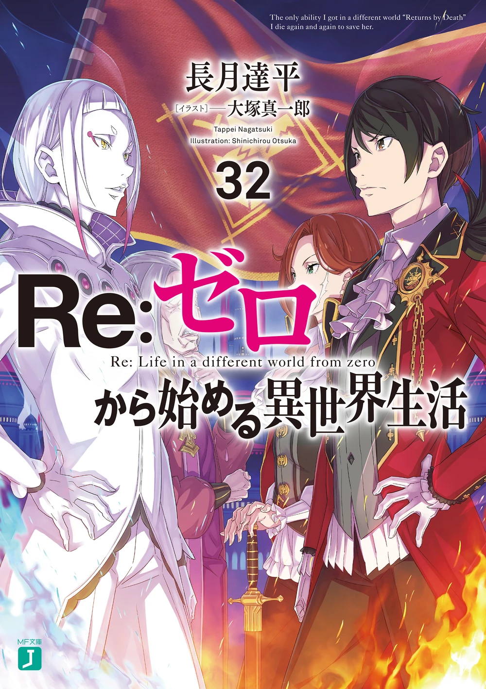
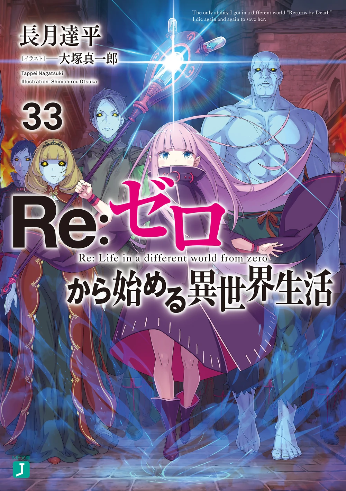

Пересказ 7-ой арки Re:Zero
7-я арка переносит Субару в Империю Волакия, где ему предстоит пережить новые испытания, гладиаторские бои и стать участником полномасштабного государственного переворота.
Тома ранобэ:







